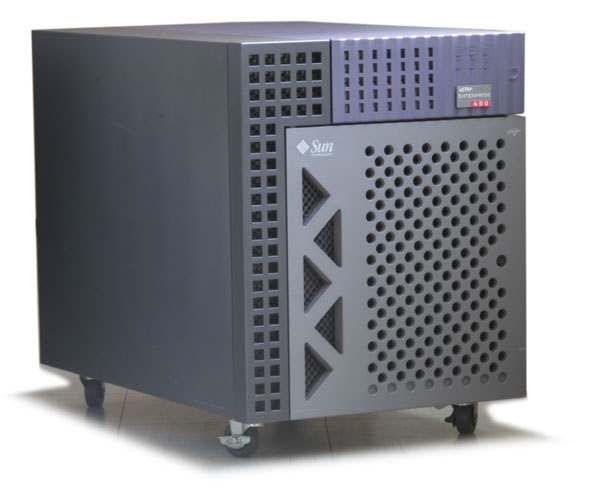
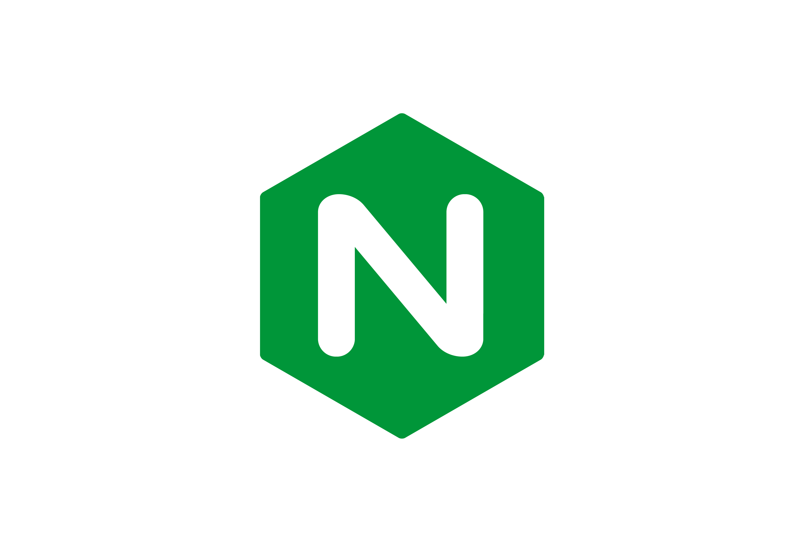
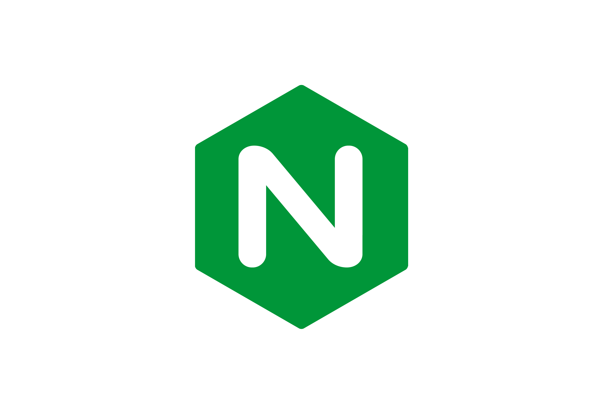
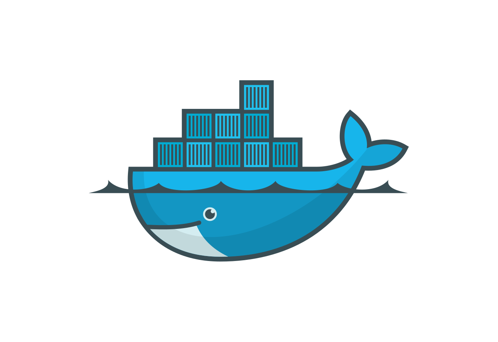
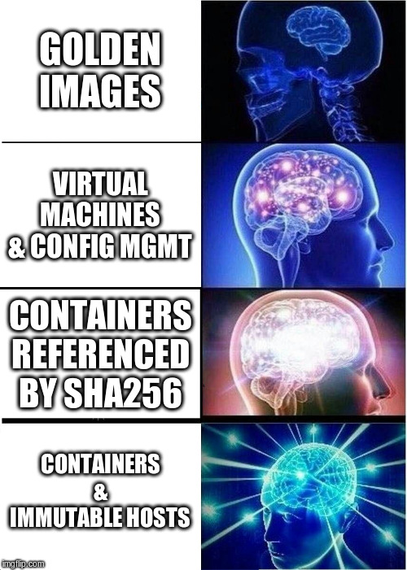
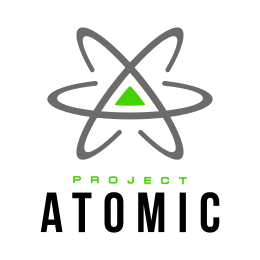

Immutable Hosts for Server and Home
Norwalk IO
Micah Abbott - @rageear
Principal Quality Engineer - Red Hat
Relative Stone Age (late 1990 - early 2000)
+  +
+ 

Scaling up == more hardware == more money == wasted resources
Relative Industrial Age (mid - late 2000)
 +
+  +
+  +
+ 
Scaling up == more VMs == less money == less wasted resources
Workloads in the Relative Future (now!)
 +  +
+  +  +
+ 

Scalling up == more containers == even less money == even less wasted resources
Why Containers?

Ensuring Deployment Consistency
The battle against OS + configuration skew!
Stone Age == Golden images
Industrial age == VM images + configuration management tooling
Future == containers served from registry, referenced by SHA256

Immutable Host?
See also: immutable infrastructure
"An immutable host is where the OS is delivered in such a way where OS modification is not expected*"
- me, probably definitely
Allows for hosts to become disposable (i.e. ants vs. elephants)
Provides a foundation for repeatable deployments (i.e. phoenix servers)
Typically delivered as image (or image-like artifact)
Some Options
RancherOS
Ubuntu Core
OpenSUSE MicroOS
NixOS
VMWare Photon
And probably your favorite that is mising from this list...
RancherOS

Docker containers for EVERYTHING
Upgrades handled via A/B boot entries
Uses cloud-config for initial host configuration
OpenSUSE MicroOS/Kubic
Atomic updates via btrfs snapshots
Read-only root filesystem
Docker + Podman + CRIO container runtimes available
cloud-init for system customization
NixOS

Fully declarative system configuration
Transactional upgrade model via Nix store
Non-privileged users can install packages
Reproducible from source
CoreOS Container Linux

Gentoo-based
No package manager (containerize everything)
OS auto-updates
A/B partitioning for updates
Declaratively configure system via Ignition
Fedora/Red Hat Atomic Host

RPM-based
Immutable root filesystem
Updates delivered via ostree/rpm-ostree
Atomic, transactional updates/rollbacks
Fully supports SELinux
Let Our Powers Combine...
Philosophy of Container Linux
Technology of Atomic Host
"An automatically updating, minimal, monolithic, container-focused operating system, designed for clusters but also operable standalone, optimized for Kubernetes but also great without it."
CoreOS Technology Pillars
ostree/rpm-ostree - managing OS contents
Ignition - declaratively configure system
podman - build, run, manage containers
zincati - update agent
coreos-assembler - build CoreOS-style systems
What is ostree + rpm-ostree?
(lib)ostree can be simplified as "git for operating systems"
Files are checksummed + tracked via content-addressed object store
Files are de-duplicated via hardlinks
Can handle bootloader configuration, management of /etc
Quoting the rpm-ostree documentation...
rpm-ostree is a hybrid image/package system
Uses libostree as the base image format
Accepts RPMs on the server side for composes and on the client side for package layering using libdnf
Primary entrypoint for managing your CoreOS-style system
Ignition
Ignition configs: declarative JSON documents provided via user data
Can write files and systemd units, create users and groups, partition disks, create RAID arrays, format filesystems
Runs from the initramfs
Runs exactly once
Fails the boot if provisioning fails
Podman
Intended as a drop-in replacement for (most of) docker CLI
Supports OCI image format and Docker image format
Doesn't require a daemon running (#nobigfatdaemons)
Full management of container life cycle
Can run containers as unprivileged user
Can create/manage pods which can be exported to Kubernetes
Zincati
rpm-ostree is driven by a service, Zincati, that requests permission to update
Updates are rolled out gradually, and can be stopped if regressions are reported
Nodes can request update permission from a cluster service
Useful for ensuring an entire cluster doesn't update simultaneously
coreos-assembler
Both the developer and production tool
- cosa init https://github.com/coreos/fedora-coreos-config
- cosa fetch
- cosa build
Can run fully unprivileged
Uses rpm-ostree and supermin
Doesn’t use Anaconda to build images
Immutable Host for the Desktop?!
Comparing Silverblue to Fedora Workstation
Both share the following:
RPMs from the Fedora ecosystem
Support package installation (although differently)
Can run containers and Flatpaks
Different Filesystem Mutability
Only /var and /etc are writeable on Silverblue

Different Upgrade Mechanisms
Silverblue uses atomic, transactional updates
Running system is not touched during updates (thank you bubblewrap)
You can pull the plug on a Silverblue (and CoreOS) host during an upgrade
Tradeoff: reboot to get into upgraded OS
Different Delivery Mechanisms
Workstation delivered as traditional RPMs
Silverblue has OS delivered as OSTree commit
Although both can install packages as RPMs
Recent Developments in Silverblue
Support for installing (some) packages to /opt; namely Google Chrome
Support for Nvidia drivers (akmods)
Shoutout to Alex Larsson for both of those features!
Going Forward
Enabling automatic OS upgrades by default
Installed Flatpaks out of the box (built + delivered from Fedora infra)
Making Silverblue default Fedora Workstation choice?
Building Silverblue via coreos-assembler
Improving documentation, growing the community
Recent Developments in Fedora CoreOS
Preview release available now - https://getfedora.org/coreos
Don't run it in production!
First stable release in ~3 months
Going Forward
next and stable streams
Full set of cloud and virtualization platforms
Live PXE and Live CD
Improved network configuration
OKD/Kubernetes integration
Get Involved!
Community Discourse - https://discussion.fedoraproject.org/
CoreOS Issue Tracker - https://github.com/coreos/fedora-coreos-tracker
Silverblue Issue Tracker - https://github.com/fedora-silverblue/issue-tracker
Silverblue Twitter - https://twitter.com/teamsilverblue
Thanks for Coming to my Talk!

Contact Me!
Twitter - https://twitter.com/rageear
Email - miabbott@redhat.com